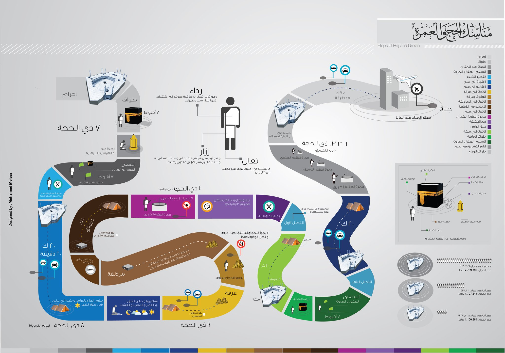

Manask Al Hejj

- تبدأ مناسك الحج بالخروج من البيت بنيّة الحج، وذلك لحديث الرّسول عليه الصّلاة والسّلام: (إنما الأعمالُ بالنياتِ، وإنما لكلِّ امرئٍ ما نوى، فمن كانت هجرتُه إلى دنيا يصيُبها، أو إلى امرأةٍ ينكحها، فهجرتُه إلى ما هاجر إليه).
- يبدأ الحجّ بالإحرام عند حدود الميقات، ويكون بارتداء لباسٍ بسيط يتكوّن من ردائين غير مخيطين للرجل، وللمرأة ما تشاء أن ترتدي دون زينة أو تبرّج. والمواقيت نوعان: مواقيت زمنية ومكانيّة؛ فالميقات الزمانيّ هو وقت الحج لقوله تعالى في كتابه العزيز: (الْحَجُّ أَشْهُرٌ مَّعْلُومَاتٌ)، وأما الميقات المكانيّ فهو ذات عرق للعراقييّن، و الجحفة لأهل الشام، وذو الحليفة لأهل المدينة، وقرن لأهل نجد، ويلملم لأهل اليمن، وهو كما ورد في الحديث الشّريف عن الرّسول عليه الصّلاة والسّلام: (وقَّتَ رسولُ اللهِ صلَّى اللهُ عليه وسلَّمَ لأهلِ المدينةِ ذا الحُلَيفةِ، ولأهلِ الشامِ الجُحْفَةَ، ولأهلِ نجْدٍ قرنَ المنازلِ، ولأهلِ اليمنِ يَلَمْلَمَ. قال: فهُنَّ لهنَّ، ولمن أتى عليهن من غير أهلهنَّ ممن أراد الحجَّ والعمرةَ، فمن كان دونهنَّ فمن أَهلِه، وكذا فكذلك، حتى أهلُ مكةَ يُهلِّون منها)، فما أن ينوى الفرد الحج عليه أن يُبادر بالتّلبية، وليبنعد عن المعاصي، كما قال الله تعالى في كتابه العزيز: ( الرفث و الفسوق و الجدال في الحج لقوله تعالى : (فَمَن فَرَضَ فِيهِنَّ الْحَجَّ فَلَا رَفَثَ وَلَا فُسُوقَ وَلَا جِدَالَ فِي الْحَجِّ ۗ وَمَا تَفْعَلُوا مِنْ خَيْرٍ يَعْلَمْهُ اللَّهُ ۗ وَتَزَوَّدُوا فَإِنَّ خَيْرَ الزَّادِ التَّقْوَىٰ ۚ وَاتَّقُونِ يَا أُولِي الْأَلْبَاب).
- اتّجاه الحاج إلى مكّة بعد الاستحمام أو الوضوء.
- دخول الحرم والبدء بالطّواف حول الكعبة سبعة أشواط، حيث يبدأ كلّ شوط منها بالحجر الأسود ويكون على يسار الحاج، ويجب على الحاجّ أن يستلم الحجر الأسود بكل شوط بالتّقبيل، أو أن يشير إليه من مكانه إذا عجز عن الوصول. وينبغي على الطّائف أن يتحاشى إيذاء من هم بجاوره من الحُجّاج بالمُزاحمة، أو الدّفع باليد وما شابه حتّى لا ينتقص من ثوابه شيء.
- السعي بعد الطّواف بين الصّفا والمروة سبع مرات؛ والصفا والمروة هما جبلان بمكّة تأسِّياً بسعي هاجر زوجة إبراهيم عليه السلام وأم إسماعيل عليه السّلام بينهما في القصّة الشّهيرة بحثاً عن الماء، وقد ورد أمر السّعي واضحاً في المجموع بأنّ الرّسول عليه الصّلاة والسّلام استقبل القبلة في السّعي، وقال كما جاء في الحديث الشّريف: (يا أيها الناسُ، اسْعَوا! فإن السعْيَ قد كُتِبَ عليكُم).
- التوجّه إلى مِنى، وهو مكان يبعد عن مكّة بثلاثة أميال، وهو المكان الذي تُرمى به الجمرات- بعد طواف القدوم في الثّامن من ذي الحجّة.
- الانطلاق إلى عرفة في التّاسع من ذي الحجّة، وجمع صلاتَي الظّهر والعصر لقول الرّسول عليه الصّلاة والسّلام: (الحجُّ عرفةُ، فمن أدرك ليلةَ عرفةَ قبل طلوعِ الفجرِ من ليلةِ جُمَعٍ فقد تمَّ حجُّه).
- النّزول من عرفة إلى المُزدلفة -وهو وادٍ بين عرفة ومِنى، يبعد مسافة ميلين عن مِنى في جهة الشّرق- و يكون ذلك في ليلة العاشر من ذي الحجّة، ويتمّ جمع صلاتَي المغرب والعشاء، وبيات الليل هناك.
- التوجّه إلى مِنى في العاشر من ذي الحجّة ورمي الجمرات (جمرة العقبة).
- نحر الأضاحي في مِنى وحلق الرّأس.
- الذّهاب إلى مكّة للقيام بطواف الزّيارة في العاشر من ذي الحجّة بعد حلق الرّأس، ثمّ العودة إلى مِنى، كذلك يُمكن للحاج أن يقوم بالسّعي بين الصّفا والمروة إن فاته سعي اليوم الثّامن من ذي الحجّة.
- القيام بمِنى في يوميّ الحادي عشر والثاني عشر من ذي الحجّة، ورمي الجمرات الثّلاث بالتّرتيب: الجمرة الأولى، والجمرة الوسطى، وجمرة العقبة، والتي تقع بالقرب من مسجد الخَيْف.
- يمكن للحاج العودة مرّة أخرى إلى مكة والطّواف حول الكعبة الشّريفة فيما يُعرف بطواف الوداع والارتواء من ماء زمزم.